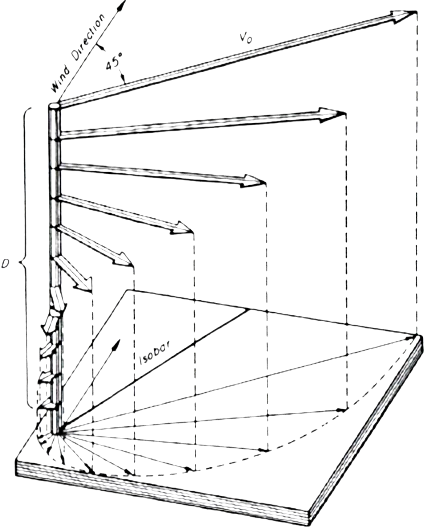

Geostrophic flow arises from a balance between the Coriolis force and the horizontal pressure gradient. In this geostrophic balance, the flow aligns perpendicular to the horizontal pressure gradient (i.e., along the contours of constant pressure) and its strength would be proportional to that pressure gradient.
The term thermal wind refers to steady or slowly time‐varying shear flow, driven by buoyancy forces due to lateral gradients in density and modified by planetary rotation through the Coriolis acceleration.
Ekman transport piles up surface water in some areas of the ocean and removes water from other areas. This causes the ocean surface to slope gradually. A sloping ocean surface generates water pressure gradients across ocean surfaces. Just as air flows from regions of high pressure to regions of low pressure, oceanic pressure gradients give rise to geostrophic flow in which water moves from regions of higher water pressure to regions of lower pressure.
